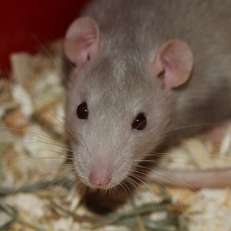

Rats
Personality
- Highly intelligent
- Social
- Loving
- Entertaining
- Clean
- Females: likely to be smaller, more active, and playful
- Males: likely to be larger, more mellow, and snuggly
Activities One Can Do With Rats
- Handle them gently
- Can teach them tricks
- Should play with them for at least 30 minutes outside of their cage every day in a rat-proofed area
Facts
- Live up to 2 to 3 years
- Love human attention
- Can learn their names quickly
- Least likely small animal to bite
- The more time you spend with rats, the friendlier they will be
- Tend to mark their territory with small amounts of urine
Diet
- Lab blocks
- Need fresh fruits/vegetables every day
Living Environment
- Rats enjoy company, so get at least two rats to live together
- Tank/Cage with solid flooring
- Aspen or recycled paper bedding recommended
- Sleeping house
- Food bowl
- Water bottle
Toys
- Solid exercising wheel
- Tubes
- Ladders
- Branches
- Food toys
- Can use some bird toys